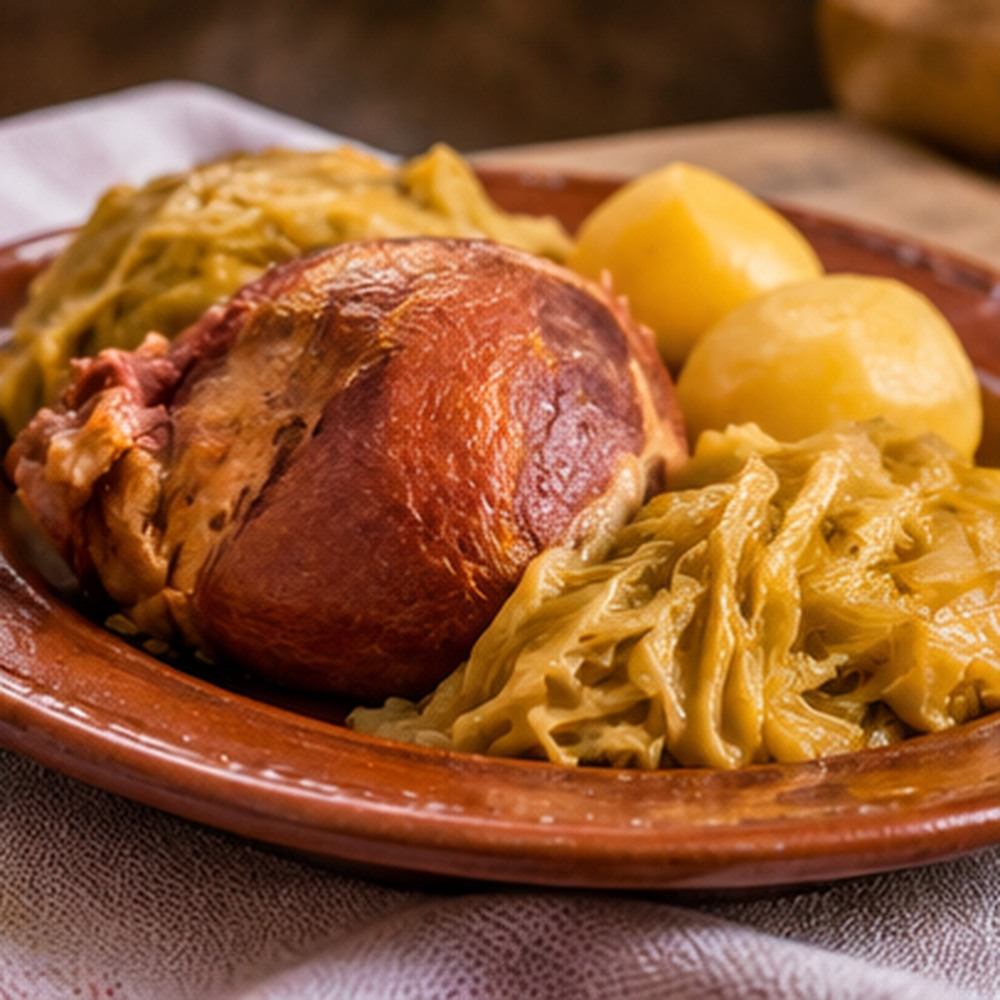
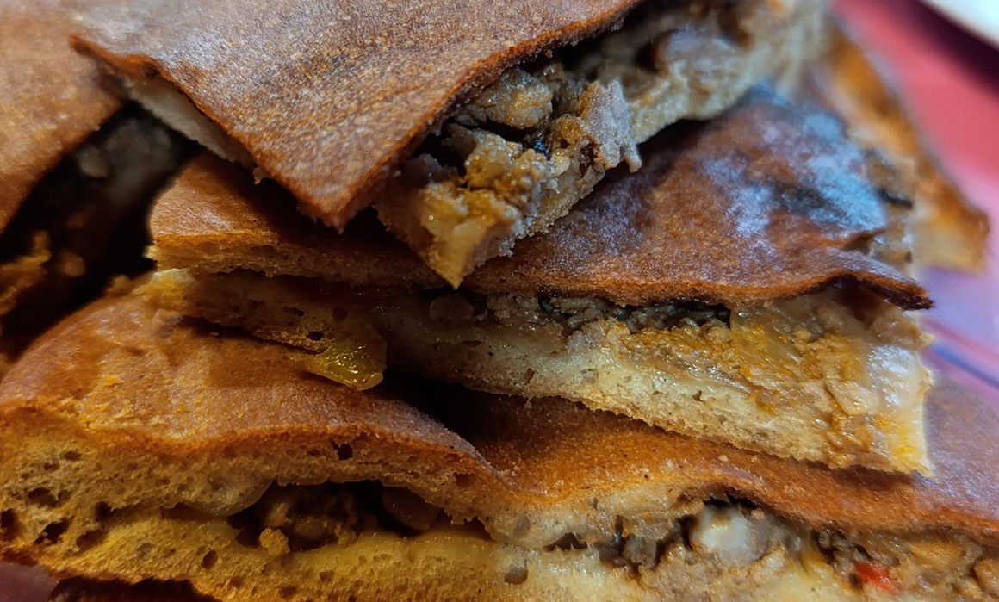
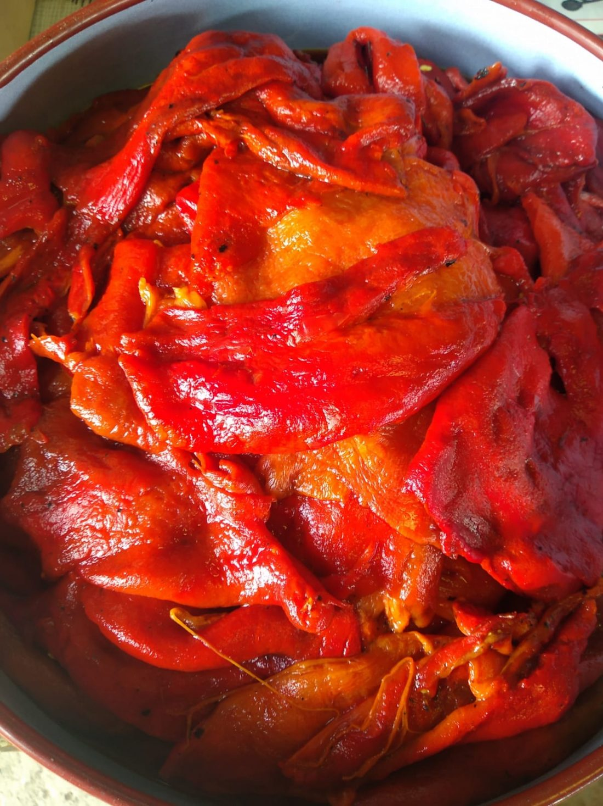
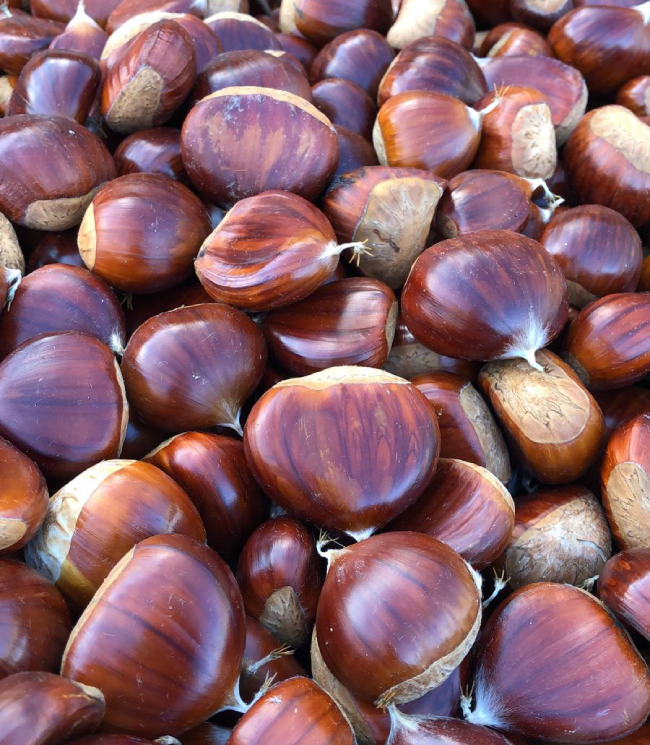

Castañas locales y productos de la gastronomía tradicional berciana.
Sellos de Calidadverified
D.O. Bierzo
Mencía y Godello
I.G.P.
Botillo y Pimientos

Plato típico · I.G.P. Bierzo
Botillo del Bierzo
Plato emblemático de la gastronomía berciana. Es un embutido elaborado con distintas piezas del cerdo, adobado y ahumado; se suele cocer y acompañar con cachelos y verduras.
local_fire_department
Cocina de lumbre

Horno tradicional
Empanada berciana
La empanada berciana es una preparación tradicional de la comarca. Sus rellenos y recetas varían entre localidades y obradores.
bakery_dining
Receta de obrador

De la huerta · I.G.P.
Pimientos asados del Bierzo
Los pimientos asados del Bierzo cuentan con Indicación Geográfica Protegida. Son un producto comarcal, no exclusivo de Rodanillo.
eco
Cosecha de verano

Despensa & Bodega · D.O. Bierzo
Castañas de Rodanillo y productos del Bierzo
La guía local destaca las castañas de Rodanillo. En el conjunto de El Bierzo también son característicos los vinos con uvas Mencía y Godello y otros productos de huerta y monte.
Vinos D.O. BierzoCastañas del sotoMiel de montañaCecina curada
Mencía & Godellowine_bar
La D.O. Bierzo ampara vinos elaborados con variedades como Mencía y Godello. Se trata de producción comarcal, no de una bodega concreta de Rodanillo.
Guía del Buen Comer
Tradiciones gastronómicas del Bierzo
Consejos locales para saborear Rodanillo y su entorno en el momento óptimo del año.
wine_bar
Maridaje con Mencía
Acompaña el botillo o la empanada con un Mencía joven o crianza de la D.O. Bierzo; su acidez equilibrada limpia el paladar y realza los aromas ahumados.
park
Magosto y castañas en El Bierzo
El magosto es una celebración otoñal extendida por la comarca y vinculada a la castaña. No se presenta aquí como un evento con fecha confirmada en Rodanillo.
agriculture
Pimientos asados del Bierzo
Producto comarcal amparado por una Indicación Geográfica Protegida. Su disponibilidad depende de la temporada y del productor.
history_eduOrigen y Elaboración
wine_barMaridaje Recomendado
Producto local y cocina comarcal
La guía turística local destaca las castañas de Rodanillo. El botillo, la empanada berciana y los pimientos asados se presentan como productos y platos de El Bierzo en su conjunto, no como especialidades exclusivas del pueblo. No se incluye un directorio de restaurantes porque no se han podido verificar establecimientos y horarios actuales dentro de Rodanillo.
Fiesta del Botillo
Wikipedia recoge una Fiesta del Botillo en Rodanillo, habitualmente en febrero. La fecha y el programa de cada edición deben confirmarse con la organización local antes de planificar la visita.